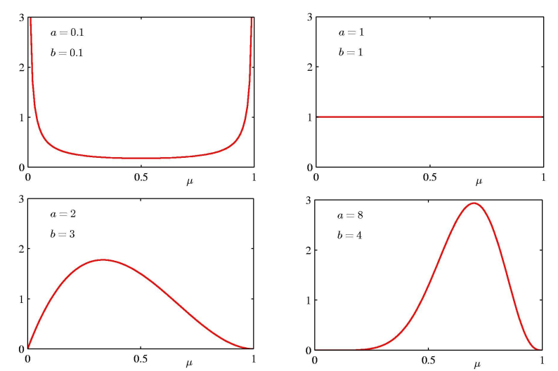
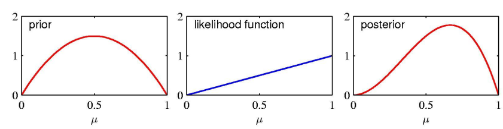
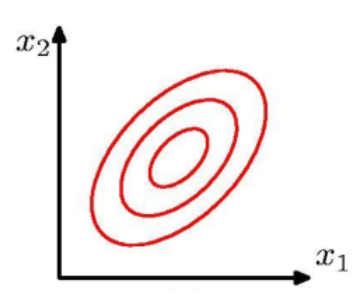
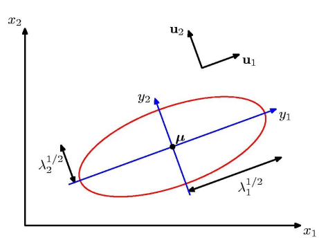
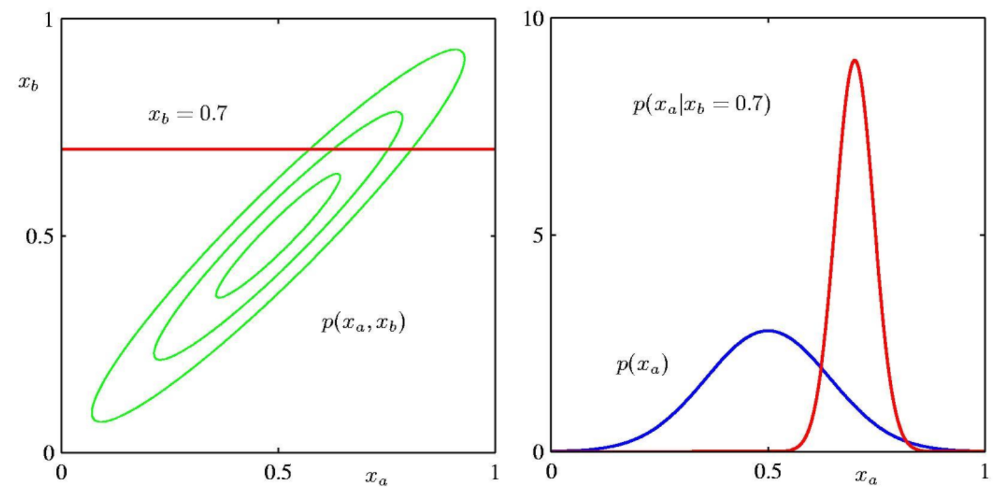
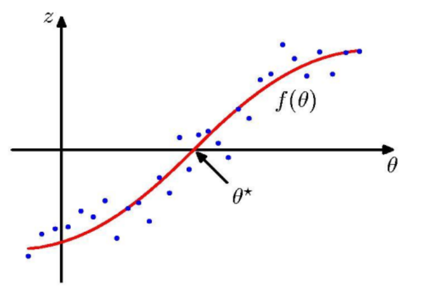
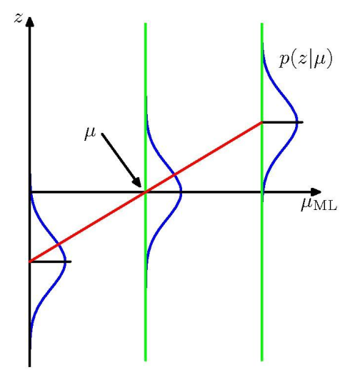
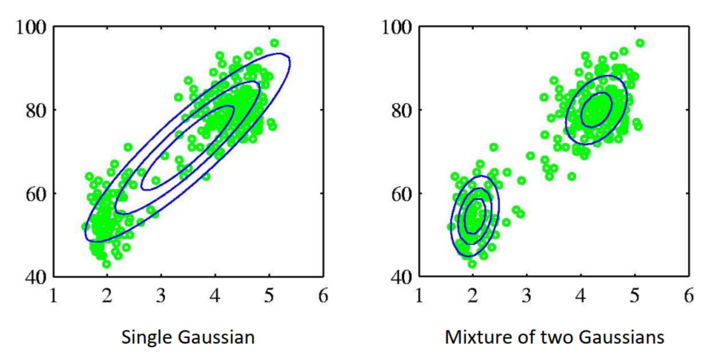

# PRML Chap2
Beta Distribution
- Beta distribution is a continuous probability distribution defined on the interval $[0, 1] $
- Two positive parameters, denoted by \(a\) and \(b\)
- The definition of this distribution is \[\begin{aligned} & {\rm{Beta} }(x |a,b) = \frac{ {\Gamma (a + b)} }{ {\Gamma (a)\Gamma (b)} }{x ^{a - 1} }{(1 - x )^{b - 1} }\\ & {\rm {E} }[x ] = \frac{a}{ {a + b} }\\ & {\rm{var} }[x ] = \frac{ {ab} }{ { { {(a + b)}^2}(a + b + 1)} } \end{aligned} \] in which \[\Gamma (x) =\int_{0}^{\infty}t^{x-1}e^{-t}\mathrm{d}t=(x-1)!\] The shapes of distributions are totally different for different values 
- The Beta distribution provides the conjugate prior for the Bernoulli distribution
- conjugate prior: If a prior distribution is the conjugate prior of a distribution, the result of Bayesian updating (i.e., combining the likelihood with the prior) will still be a distribution of the same type, but with updated parameters.
- If we use a Beta distribution as the prior for the Bernoulli distribution, after observing data, the posterior distribution will still be a Beta distribution, but with its parameters updated based on the data \[\begin{aligned} p({\mu ^*}|{a_0},{b_0},D)& = \frac{ {p(D,{\mu ^*}|{a_0},{b_0})} }{ {\int {p(D|\mu )p(\mu |{a_0},{b_0}){\mkern 1mu} d\mu } } }\\ &= \frac{ {p(D|{\mu ^*})p({\mu ^*}|{a_0},{b_0})} }{ {P(D)} }\\ &\propto p(D|{\mu ^*})p({\mu ^*}|{a_0},{b_0})\\ &= \left( {\prod\limits_{n = 1}^N { {\mu ^{* ~{x_n} } } } { {(1 - \mu^* )}^{ {1 - {x_n} } } } } \right){\rm{Beta} }({\mu ^*}|{a_0},{b_0})\\ & = {\mu ^*}^m{(1 - {\mu ^*})^{N - m} }{\mu ^*}^{ {a_0} - 1}{(1 - {\mu ^*})^{ {b_0} - 1} }\\ &\propto {\mu ^{*~m + {a_0} - 1} }{(1 - \mu^* )^{N - m + {b_0} - 1} } \\ &\propto {\rm{Beta} }\left( {\mu^* |{a_0} + m,N - m + {b_0} } \right) \end{aligned} \] \(\mu^*\) is the variable for query, i.e., we want to query the probability of \(E[x]=\mu^*\) given the data \(D\) and the prior \(p(\mu)={\rm{Beta} }(\mu|a_0,b_0)\). Bayesian method is applied here. \(x_n\) is the sampled value in \(D\), being either \(0\) or \(1\) 
- Assign \(a_N=a_0 + m\), \(b_N=N-m+b_0\), as the size of data \(N\rightarrow \infty\), both \(m\rightarrow \infty\) and \(N-m\rightarrow \infty\), thus the constant \(a_0\) and \(b_0\) can be ignored. \[\begin{aligned} &{a_N} \to m\\ &{b_N} \to N - m\\ &E(\mu ) = \frac{ { {a_N} } }{ { {a_N} + {b_N} } }{\mkern 1mu} \to {\mkern 1mu} \frac{m}{N} = {\mu _{ {\rm{ML} } } }\\ &{\mathop{\rm var} } [\mu ] = \frac{ { {a_N}{b_N} } }{ { { {({a_N} + {b_N})}^2}({a_N} + {b_N} + 1)} } \to 0 \end{aligned} \]
- Prediction under the posterior: The probability of the r.v. \(x=1\) equals to the integration of \(p(x=1)\) under all possible \(\mu\) \[\begin{aligned} &p(x = 1|{a_0},{b_0},D) \\ &= \int_0^1 p (x = 1|\mu )p(\mu |{a_0},{b_0},D){\mkern 1mu} {\rm{d} }\mu \\ &= \int_0^1 \mu p(\mu |{a_0},{b_0},D){\mkern 1mu} {\rm{d} }\mu \\ &= E[\mu |{a_0},{b_0},D]\\ &= \frac{ { {a_N} } }{ { {a_N} + {b_N} } }\\ \end{aligned} \]
Multinoimal Distribution
Take \(1\) out of \(K\) one-hot coding as an example, here \(K=6\) \[{\bf x}\ =\,(0,0,1,0,0,0)^{\mathrm{T} }\] The probability of getting such an \(\bf x\) is \[p(\mathbf{x}|\mu)=\prod_{k=1}^{K}\mu_{k}^{x_{k} }\] in which \(\mu_k\) refers to the expectation probability of getting a \(1\) in the \(k\)'th position and \(x_k\) is the real value in \(\bf x\)'s \(k\)'th position. In one-hot coding, only one element is \(1\) and the rest are \(0\). Suppose that the \(k\)'th element is \(1\), the formula above reduces to \[ p ({\bf{x} }|\mu ) = { {\mu _k} } \] Then calculate the expectation \[E[{\bf{x} }|\mu ] = \sum\limits_{\bf{x} } p ({\bf{x} }|\mu ){\bf{x} } = {({\mu _1}, \ldots ,{\mu _K})^{\rm{T} } } = \bf {\mu} \]
- Given an observation set \(D=\lbrace\mathbf{x}_{1},\cdot\cdot\cdot,\mathbf{x}_{N}\rbrace\), the likelihood function and log-likelihood is \[\begin{aligned} p(D|\mu ) &= \prod\limits_{n = 1}^N {\prod\limits_{k = 1}^K {\mu _k^{ {x_{nk} } } } } = \prod\limits_{k = 1}^K {\mu _k^{(\sum\limits_n { {x_{nk} } } )} } = \prod\limits_{k = 1}^K {\mu _k^{ {m_k} } } \\ &\Rightarrow \log p(D|\mu ) = \sum\limits_{k = 1}^K { {m_k} } \log {\mu _k} \end{aligned} \] where \(m_k\) is the number of vectors in \(D\) satisfying the \(k\)'th bit is \(1\). To maximize the likelihood function, we use the Lagrange multiplier method. Since we have the constraint \(\sum_{k=1}^{K}\mu_k=1\), we can construct the Lagrange function \[\mathcal{L}(\mu,\lambda)=\sum_{k=1}^{K}m_{k}\ln\mu_{k}+\lambda\left(\sum_{k=1}^{K}\mu_{k}-1\right)\] Take the partial derivative of \(\mathcal{L}\) with respect to \(\mu_{k}\) and set it to \(0\) \[\frac{ {\partial {\cal L} } }{ {\partial {\mu _k} } } = \frac{ { {m_k} } }{ { {\mu _k} } } + \lambda = 0 \Rightarrow {\mu _k} = - \frac{ { {m_k} } }{\lambda } \] Then substitute \(\mu_{k}\) back to the constraint, we have \[\sum\limits_{k = 1}^K { {\mu _k} } = \sum\limits_{k = 1}^K - \frac{ { {m_k} } }{\lambda } = 1 \Rightarrow \lambda = - \sum\limits_{k = 1}^K { {m_k} } = - N \] Thus the maximum likelihood estimation is \[\mu _k^{ {\rm{ML} } } = \frac{ {m_k} }{N} \]
The definition of multinomial distribution and concerning statistical parameters are below \[ \begin{aligned} \text{Mult}(m_1, m_2, \dots, m_K \mid \boldsymbol{\mu}, N) &= \binom{N}{m_1, m_2, \dots, m_K} \prod_{k=1}^{K} \mu_k^{m_k}\\ {E}[m_k] &= N \mu_k\\ \text{var}[m_k] &= N \mu_k (1 - \mu_k)\\ \text{cov}[m_j, m_k] &= -N \mu_j \mu_k \end{aligned} \]
Dirichlet Distribution
The Dirichlet distribution is a multivariate generalization of the Beta distribution, also the conjugate prior for the multinomial distribution. The definition is \[\mathrm{Dir}(\mu|\alpha)={\frac{\Gamma(\alpha_{0})}{\Gamma(\alpha_{1})\cdot\cdot\cdot\Gamma(\alpha_{K})} }\prod_{k=1}^{K}\mu_{k}^{\alpha_{k}-1}\] where the parameters satisfy \[\alpha_{0}=\sum_{k=1}^{K}\alpha_{k}\]
The derivation showing the Dirichlet distribution is the conjugate prior for the multinomial distribution is below. Given the data set \(D=\{m_{1},m_{2},\cdot\cdot\cdot,m_{K}\}\), where \(m_{k}\) is the count of observations in the \(k\)'th category. Parameter \(\bf{\mu}=\{\mu_1, \mu_2, ..., \mu_K\}\). The likelihood function is \[p(D\mid\mu)=\frac{ {N}!}{ {m}_{1}! m_{2}! \cdot \cdot \cdot {m}_{K}!}\prod_{k=1}^{K}\mu_{k}^{m_{k} }\] The Dirichlet prior with parameter \(\alpha=\{\alpha_{1},\alpha_{2},\cdot\cdot\cdot,\alpha_{K}\}\) is \[p(\boldsymbol{\mu} \mid \boldsymbol{\alpha})=\frac{\Gamma\left(\alpha_{0}\right)}{\prod_{k=1}^{K} \Gamma\left(\alpha_{k}\right)} \prod_{k=1}^{K} \mu_{k}^{\alpha_{k}-1}\] Similar to the derivation in last section, apply Bayes' theorem, we have \[ \begin{aligned} p(\boldsymbol{\mu} \mid {D}, \boldsymbol{\alpha}) &\propto p({D} \mid \boldsymbol{\mu}) \, p(\boldsymbol{\mu} \mid \boldsymbol{\alpha}) \\ &= \left( \prod_{k=1}^{K} \mu_k^{m_k} \right) \left( \prod_{k=1}^{K} \mu_k^{\alpha_k - 1} \right) \\ &= \prod_{k=1}^{K} \mu_k^{m_k + \alpha_k - 1} \\ &= \frac{\Gamma(\sum_{k=1}^{K} (\alpha_k + m_k))}{\prod_{k=1}^{K} \Gamma(\alpha_k + m_k)} \prod_{k=1}^{K} \mu_k^{m_k + \alpha_k - 1} \\ &=\frac{ {\Gamma ({\alpha _0} + N)} }{ {\prod\limits_{k = 1}^K \Gamma ({\alpha _k} + {m_k})} }\prod\limits_{k = 1}^K {\mu _k^{ {m_k} + {\alpha _k} - 1} } \\ &= \text{Dir}(\boldsymbol{\mu} \mid \boldsymbol{\alpha} + \boldsymbol{m}) \end{aligned} \]
Gaussian Distribution
The Gaussian distribution is defined as \[\mathcal{N}(x|\mu,\sigma^{2})=\frac{1}{(2\pi\sigma^{2})^{1/2} }\exp\left\{-\frac{1}{2\sigma^{2} }(x-\mu)^{2}\right\}\] while multivariate Gaussian distribution is a little bit different \[{\mathcal N}({\bf x}|\mu,{\bf\Sigma})=\frac{1}{(2\pi)^{D/2} }\frac{1}{|{\bf\Sigma}|^{1/2} }\exp\left\{-\frac{1}{2}({\bf x}-\mu)^{\mathrm{T} }{\bf\Sigma}^{-1}({\bf x}-\mu)\right\}\] The level graph diagram of multivariate Gaussian is shown below 
Geometry of Multivariate Gaussian The Mahalanobis Distance \(Δ^2\) is defined as \[\Delta^{2}=(\mathbf{x}-{\boldsymbol{\mu} })^{\mathrm{T} }\Sigma^{-1}(\mathbf{x}-{\boldsymbol{\mu} })\] This equation represents the Mahalanobis distance between a point \(x\) and the mean \(μ\) of the distribution. It measures the distance accounting for the distribution's covariance structure. The inverse of the covariance matrix can be acquired through the eigendecomposition of the covariance matrix \[\Sigma^{-1}=\sum_{i=1}^{D}\frac{1}{\lambda_{i} }\mathbf{u}_{i}\mathbf{u}_{i}^{\mathrm{ {T} } }\] where \(\bm u_i\) is the eigenvalue of both \(\Sigma\) and \(\Sigma^{-1}\). The Mahalanobis distance can be rewritten as \[\begin{aligned} {\Delta ^2} &= {(x - \mu )^T}{\mkern 1mu} {\Sigma ^{ - 1} }(x - \mu )\\ &= {(x - \mu )^T}{\mkern 1mu} U{\Lambda ^{ - 1} }{U^T}(x - \mu )\\ &= {y^T}{\Lambda ^{ - 1} }y\\ &= \sum\limits_{i = 1}^D {\frac{ {y_i^2} }{ { {\lambda _i} } } } \end{aligned} \] in which \[{y_i} = \bm{u_i^T(x - \mu )} \]
Calculate the expectation: Change the variable, then split the original integration into an odd one and a normal Gaussian \[ \begin{aligned} \mathbb{E}[\mathbf{x}] &= \frac{1}{(2\pi)^{D/2} |\Sigma|^{1/2} } \int \mathbf{x} \exp \left( -\frac{1}{2} (\mathbf{x} - \mu)^\top \Sigma^{-1} (\mathbf{x} - \mu) \right) d\mathbf{x} \\ &= \frac{1}{(2\pi)^{D/2} |\Sigma|^{1/2} } \int (\mathbf{z} + \mu) \exp \left( -\frac{1}{2} \mathbf{z}^\top \Sigma^{-1} \mathbf{z} \right) d\mathbf{z} \\ &= \frac{1}{(2\pi)^{D/2} |\Sigma|^{1/2} } \int \mathbf{z} \exp \left( -\frac{1}{2} \mathbf{z}^\top \Sigma^{-1} \mathbf{z} \right) d\mathbf{z} + \mu \frac{1}{(2\pi)^{D/2} |\Sigma|^{1/2} } \int \exp \left( -\frac{1}{2} \mathbf{z}^\top \Sigma^{-1} \mathbf{z} \right) d\mathbf{z} \\ &= 0 + \mu \cdot 1 \\ &= \mu \end{aligned} \]
- There some other properties
$[ ^T] = ^T + $ proof: \[\begin{aligned} E\left[ { {\bf{x} }{ {\bf{x} }^T} } \right] &= E{\mkern 1mu} \left[ {({\bf{x} } - \mu + \mu ){ {({\bf{x} } - \mu + \mu )}^T} } \right]\\ &= E\left[ {({\bf{x} } - \mu ){ {({\bf{x} } - \mu )}^T} } \right] + E\left[ {({\bf{x} } - \mu ){\mu ^T} } \right] + E\left[ {\mu { {({\bf{x} } - \mu )}^T} } \right] + E\left[ {\mu {\mu ^T} } \right]\\ &= \Sigma + 0 + 0 + \mu {\mu ^T}\\ &= \Sigma + \mu {\mu ^T} \end{aligned} \]
\(\operatorname{cov}[\mathbf{A}{}\mathbf{x}]=\mathbf{A}{}\mathbf{A}^{T}\) proof: \[\begin{aligned} {\mathop{\rm cov} } [{\bf{Ax} }] &= E\left[ {({\bf{Ax} } - E[{\bf{Ax} }]){ {({\bf{Ax} } - E[{\bf{Ax} }])}^T} } \right]\\ &= E\left[ { {\bf{A} }({\bf{x} } - E[{\bf{x} }]){ {({\bf{x} } - E[{\bf{x} }])}^T}{ {\bf{A} }^T} } \right]\\ &= {\bf{A} }E\left[ {({\bf{x} } - E[{\bf{x} }]){ {({\bf{x} } - E[{\bf{x} }])}^T} } \right]{ {\bf{A} }^T}\\ &= {\bf{A} }\Sigma { {\bf{A} }^T} \end{aligned} \]
- Properties of Gaussian
- Linear \[ \begin{aligned} &X \sim \mathcal{N}(\mu, \sigma^2), \quad Y = aX + b \Rightarrow Y \sim \mathcal{N}(a\mu + b, a^2 \sigma^2) \\ &X \sim \mathcal{N}(\mu, \Sigma), \quad Y = AX + B \Rightarrow Y \sim \mathcal{N}(A\mu + B, A \Sigma A^T) \end{aligned} \]
- Multiplication \[ \begin{aligned} &X_1 \sim \mathcal{N}(\mu_1, \sigma_1^2), \quad X_2 \sim \mathcal{N}(\mu_2, \sigma_2^2) \Rightarrow p(X_1) \cdot p(X_2) \sim \mathcal{N} \left( {\frac{ {\sigma_{2} }^{2} }{ { {\sigma_{1} }^{2} }+{ {\sigma_{2} }^{2} } } }\,{\mu_{1} }+{\frac{ {\sigma_{1} }^{2} }{ {\sigma_{1} }^{2}+{ {\sigma_{2} }^{2} } } }\,{\mu_{2} }, \frac{1}{\sigma_1^{-2} + \sigma_2^{-2} } \right) \\ &X_1 \sim \mathcal{N}(\mu_1, \Sigma_1), \quad X_2 \sim \mathcal{N}(\mu_2, \Sigma_2) \Rightarrow p(X_1) \cdot p(X_2) \sim \mathcal{N} \left({\frac{\Sigma_{2} }{\Sigma_{1}+\Sigma_{2} } }\,\mu_{1}+{\frac{\Sigma_{1} }{\Sigma_{1}+\Sigma_{2} } }\,\mu_{2} , \frac{1}{\Sigma_1^{-1} + \Sigma_2^{-1} } \right) \end{aligned} \]
Bayesian for Gaussion
Let's formulate the problem first. Given that \[\begin{aligned} &y = Ax + v\\ &p(x) = {\cal N}(x|\mu ,\Sigma )\quad p(v) = {\cal N}(v|0,Q) \end{aligned} \] we know \[\begin{aligned} &p(y|x) = {\cal N}(y|Ax,Q)\\ &p(y) = {\cal N}(y|A\mu ,A\Sigma {A^T} + Q) \end{aligned} \] and our task is to estimate \(p(x|y)\). Assume that \[p(x|y)\sim \mathcal{N}(m|L) \] Apply Bayesian theorem, we have \[\begin{aligned} p(x|y) &\propto p(y|x)p(x)\\ &\Rightarrow \frac{1}{2}{(x - m)^T}{L^{ - 1} }(x - m) \propto - \frac{1}{2}{(y - Ax)^T}{O^{ - 1} }(y - Ax) - \frac{1}{2}{(x - \mu )^T}{\Sigma ^{ - 1} }(x - \mu )\\ &\Rightarrow \left\{ \begin{array}{l} {L^{ - 1} } = {A^T}{Q^{ - 1} }A + {\Sigma ^{ - 1} }\\ {L^{ - 1} }m = {A^T}{Q^{ - 1} }y + {\Sigma ^{ - 1} }\mu \end{array} \right. \end{aligned} \] The equations are derived by letting the parameters of the quadratic and linear terms in the exponent of the Gaussian distribution equal to each other. By solving the equations, we can get the mean and covariance of the posterior distribution.
There is a general theorem to calculate the inverse matrix \[{[A + BCD]^{ - 1} } = {A^{ - 1} } - {A^{ - 1} }B{[{C^{ - 1} } + D{A^{ - 1} }B]^{ - 1} }D{A^{ - 1} } \] By using this theorem, we can easily get the result \[\left\{ \begin{array}{l} L = (I - KA)\Sigma \\ m = \mu + K(y - A\mu ) \end{array} \right. \] in which \(K = \Sigma A^T(A\Sigma A^T + Q)^{-1}\) called kalman gain. Thus the posterior distribution is \[p(x|y)=\mathcal{N}(x|y+K(y-A\mu),(I-K A)\Sigma)\]
By expressing the Gaussian distribution in terms of the precision matrix, we can simplify the calculation of the posterior distribution. Given that \[\begin{aligned} p({\bf{x} }) = {\cal N}\left( { {\bf{x} }|\mu ,{ {\bf{\Lambda } }^{ - 1} } } \right)\\ p({\bf{v} }) = {\cal N}\left( { {\bf{v} }|0,{ {\bf{L} }^{ - 1} } } \right) \end{aligned} \] we have \[\begin{aligned} &p({\bf{y} }|{\bf{x} }) = {\cal N}\left( { {\bf{y} }|{\bf{Ax} } + {\bf{b} },{ {\bf{L} }^{ - 1} } } \right)\\ &p({\bf{y} }) = {\cal N}({\bf{y} }|{\bf{A} }\mu + {\bf{b} },{ {\bf{L} }^{ - 1} } + {\bf{A} }{\Lambda ^{ - 1} }{ {\bf{A} }^{\rm{T} } }) \end{aligned} \] and the posterior distribution is \[p({\bf{x} }|{\bf{y} }) = {\cal N}({\bf{x} }|{\bf{\Sigma } }\{ { {\bf{A} }^{\rm{T} } }{\bf{L} }({\bf{y} } - {\bf{b} }) + {\bf{A} }\mu \} ,{\bf{\Sigma } }) \] where \[{\bf{\Sigma } } = {({\bf{\Lambda } } + {\bf{A} }^{\rm{T} }{\bf{LA} })^{ - 1} }\] This expression is much simpler than the previous one not using the inverse matrix theorem
Partition Multivariate Gaussian
Given a multivariate Gaussian distribution \[p(\mathbf{x})={\mathcal{N} }(\mathbf{x}|\mu,\mathbf{\boldsymbol{z} })\qquad\Lambda=\Sigma^{-1}\] we can partition the random vector into two parts, say \[\mathbf{x}=\begin{bmatrix}\mathbf{x}_{a}\\\mathbf{x}_{b}\end{bmatrix}\], where \(\mathbf{x}_{a}\) and \(\mathbf{x}_{b}\) are two sub-vectors. The mean, covariance and precision matrix of the original Gaussian distribution become \[\begin{array}{l} {\bf{\mu } } = \left[ {\begin{array}{c} { { {\bf{\mu } }_a} }\\ { { {\bf{\mu } }_b} } \end{array} } \right]\\ {\bf{\Sigma } } = \left[ {\begin{array}{c} { { {\bf{\Sigma } }_{aa} } }&{ { {\bf{\Sigma } }_{ab} } }\\ { { {\bf{\Sigma } }_{ba} } }&{ { {\bf{\Sigma } }_{bb} } } \end{array} } \right]\\ {\bf{\Lambda } } = \left[ {\begin{array}{c} { {\Lambda _{aa} } }&{ { {\rm{A} }_{ab} } }\\ { {\Lambda _{ba} } }&{ { {\rm{A} }_{bb} } } \end{array} } \right] \end{array} \] Suppose that there is a relationship between \(\mathbf{x}_{a}\) and \(\mathbf{x}_{b}, w\sim \mathcal{N}(w|0, \Sigma_w)\) \[\mathbf{x}_{a}=A\mathbf{x}_{b}+w\] There are some properties of the partitioned Gaussian distribution * The conditional covariance matrix of \(\mathbf{x}_{a}\) given \(\mathbf{x}_{b}\) is \[\mathbf{\Sigma}_{a|b}=\mathbf{\Sigma}_{w}\] Since \(\mathbf{x}_b\) is given, the covariance of \(\mathbf{x}_a\) is the same as the covariance of \(w\). * Calculate the conditional expectations. Do decentalization on the original Gaussian distribution first \[{E}[x_{a}]={E}[A x_{b}+w]=A{E}[x_{b}]+{E}[w]=A\mu_{b}+0=\mu_{a}\\ \Rightarrow \left(x_{a}-\mu_{a}\right)=A(x_{b}-\mu_{b})+w\] To obtain \(\mathbf{\mu}_{\mathbf{x}_a|\mathbf{x}_b}\), we can start from \(E[\mathbf{x}_a-\mu_a|\mathbf{x}_b]\) \[\begin{aligned} E[{x_a} - {\mu _a}|{x_b}] &= E[A({x_b} - {\mu _b}) + w|{x_b}]\\ &= E[A({x_b} - {\mu _b})|{x_b}]\\ &= A({x_b} - {\mu _b})\\ &\Rightarrow E[{x_a}|{x_b}] - {\mu _a} = A({x_b} - {\mu _b})\\ &\Rightarrow {\mu _{ {x_a}|{x_b} } } = A({x_b} - {\mu _b}) + {\mu _a} \end{aligned} \] * Relations of the covariance matrix \[\begin{aligned} {\Sigma _{ab} }{\mkern 1mu} &= \text{Cov}({ {\bf{x} }_a},{ {\bf{x} }_b})\\ &= {\mkern 1mu} \text{Cov}(A{ {\bf{x} }_b} + w,{ {\bf{x} }_b})\\ &= {\mkern 1mu} A\text{Cov}({ {\bf{x} }_b},{ {\bf{x} }_b}) + \text{Cov}(w,{ {\bf{x} }_b})\\ &= A{\Sigma _{bb} }\\ &\Rightarrow A = {\Sigma _{ab} }{\Sigma_{bb}^{ - 1} } \end{aligned} \] and \[\begin{aligned} {\Sigma _{aa} }{\mkern 1mu} & = {\rm{Cov} }({ {\bf{x} }_a},{ {\bf{x} }_a})\\ &= {\mkern 1mu} {\rm{Cov} }(A{ {\bf{x} }_b} + w,A{ {\bf{x} }_b} + w)\\ &= {\rm{Cov} }(A{ {\bf{x} }_b},A{ {\bf{x} }_b}) + {\rm{Cov} }(A{ {\bf{x} }_b},w) + {\rm{Cov} }(w,A{ {\bf{x} }_b}) + {\rm{Cov} }(w,w)\\ &= {\rm{Cov} }(A{ {\bf{x} }_b},A{ {\bf{x} }_b}) + {\rm{Cov} }(w,w)\\ &= A{\rm{Cov} }({ {\bf{x} }_b},{ {\bf{x} }_b}){A^T} + {\rm{Cov} }(w,w)\\ &= A{\Sigma _{bb} }{A^T} + {\Sigma _w} \end{aligned} \] Substitute \(A = {\Sigma _{ab} }{\Sigma_{bb}^{ - 1} }\) into the equation above, we have \[{\Sigma _{aa} } = {\Sigma _{ab} }{\Sigma_{bb}^{ - 1} }{\Sigma _{bb} }{\Sigma_{bb}^{ - 1} }{\Sigma _{ba} } + {\Sigma _w} = {\Sigma _{ab} }{\Sigma_{bb}^{ - 1} }{\Sigma _{ba} } + {\Sigma _{a|b} }\] * From the results above, we can get the conditional distribution of \(\mathbf{x}_a\) given \(\mathbf{x}_b\) \[\left\{ \begin{array}{l} {\mu _{a|b} } = {\Sigma _{ab} }\Sigma _{bb}^{ - 1}({x_b} - {\mu _b}) + {\mu _a}\\ {\Sigma _{a|b} } = {\Sigma _{aa} } - {\Sigma _{ab} }\Sigma _{bb}^{ - 1}{\Sigma _{ba} } \end{array} \right. \] * Illustration of the partitioned Gaussian distribution. The green line level graph is the joint distribution, while the red line level graph is the conditional distribution and the blue line marginal distribution 
Maximum Likelihood for Gaussian
Given i.i.d data \[\mathbf{X}=\left(\mathbf{x}_{1},\cdot\cdot\cdot,\mathbf{x}_{N}\right)^{\mathrm{T} }\] where \(\mathbf{x}_{n}\) is a vector. The likelihood function is \[ \ln p({\bf{X} }|\mu ,{\bf{\Sigma } }) = - \frac{ {ND} }{2}\ln (2\pi ) - \frac{N}{2}\ln |{\bf{\Sigma } }| - \frac{1}{2}\sum\limits_{n = 1}^N { { {({ {\bf{x} }_n} - \mu )}^{\rm{T} } } } { {\bf{\Sigma } }^{ - 1} }({ {\bf{x} }_n} - \mu ) \] Calculate the derivative and set it to zero, we can get the maximum likelihood estimation of \(\mu\) and \(\Sigma\) \[\begin{aligned} &\frac{\partial }{ {\partial \mu } }\ln p({\bf{X} }|\mu ,\Sigma ) = \sum\limits_{n = 1}^N { {\Sigma ^{ - 1} } } ({ {\bf{x} }_n} - \mu ) = 0\\ &\Rightarrow {\mu _{ {\rm{ML} } } } = \frac{1}{N}\sum\limits_{n = 1}^N { { {\bf{x} }_n} } \end{aligned} \] and similar for \(\Sigma\) \[{\Sigma _{ {\rm{ML} } } } = \frac{1}{N}\sum\limits_{n = 1}^N {({ {\bf{x} }_n} - {\mu _{ {\rm{ML} } } }){ {({ {\bf{x} }_n} - {\mu _{ {\rm{ML} } } })}^{\rm{T} } } } \]
- The maximum likelihood estimation of the covariance matrix is biased. Assume that \[ \mathbf{x}_n=\mu + \epsilon_n \] in which \[ \epsilon_n\sim\mathcal{N}(0,\Sigma) \] Then \(\mu_{ML}\) can be rewritten as \[ \begin{aligned} \mu_{\text{ML} } &= \frac{1}{N} \sum_{n=1}^N \mathbf{x}_n \\ &= \frac{1}{N} \sum_{n=1}^N (\mu + \epsilon_n) \\ &= \mu + \frac{1}{N} \sum_{n=1}^N \epsilon_n \end{aligned} \] Substitute everything abouve into the formula of \(\Sigma_{ML}\), we have \[ \begin{aligned} \hat{\Sigma}_{\text{ML} } &= \frac{1}{N} \sum_{n=1}^N (x_n - \mu_{\text{ML} })(x_n - \mu_{\text{ML} })^T \\ &= \frac{1}{N} \sum_{n=1}^N \left[(\epsilon_n - \frac{1}{N} \sum_{i=1}^N \epsilon_i)(\epsilon_n - \frac{1}{N} \sum_{i=1}^N \epsilon_i)^T \right] \\ &= \frac{1}{N} \sum_{n=1}^N (\epsilon_n - \bar{\epsilon})(\epsilon_n - \bar{\epsilon})^T \quad \text{in which} \quad \bar{\epsilon} = \frac{1}{N} \sum_{i=1}^N \epsilon_i \end{aligned} \] Calculate the expectation of \(\hat{\Sigma}_{\text{ML} }\) \[ \begin{aligned} E[\hat{\Sigma}_{\text{ML} }] &= \frac{1}{N} \sum_{n=1}^N {E}\left[(\epsilon_n - \bar{\epsilon})(\epsilon_n - \bar{\epsilon})^T\right] \\ &= \frac{1}{N} \sum_{n=1}^N \left( E[\epsilon_n \epsilon_n^T] - \frac{1}{N}E[\epsilon_n \sum_{i=1}^N \epsilon_i^T] - \frac{1}{N}E\left[\left(\sum_{i=1}^N \epsilon_i\right) \epsilon_n^T\right] + \frac{1}{N^2}E\left[\left(\sum_{i=1}^N \epsilon_i\right)\left(\sum_{j=1}^N \epsilon_j\right)^T\right] \right) \\ &= \frac{1}{N} \left( N \Sigma - \frac{2(N-1)}{N} \Sigma + \frac{N(N-1)}{N^2} \Sigma \right) \\ &= \frac{1}{N} \left( (N - 1)\Sigma \right) \\ &= \frac{N - 1}{N} \Sigma \end{aligned} \] Thus the maximum likelihood estimation of the covariance matrix is biased. The unbiased estimation is \[{\tilde \Sigma}={\frac{1}{N-1} }\sum_{n=1}^{N}(\mathbf{x}_{n}-\mu_{\mathrm{ML} })(\mathbf{x}_{n}-\mu_{\mathrm{ML} })^{T}\]
Sequential Estimation: When the data is given sequentially, we don't need to traverse through all data to calculate the mean value \[\begin{align*} \mu _{ML}^{(N)} &= \frac{1}{N}\sum\limits_{n = 1}^N { { x_n} } \\ &= \frac{1}{N}{x_N} + \frac{1}{N}\sum\limits_{n = 1}^{N - 1} { { x_n} } \\ &= \frac{1}{N}{x_N} + \frac{ { N - 1} }{N}\mu _{ML}^{(N - 1)}\\ &= \mu _{ML}^{(N - 1)} + \frac{1}{N}({x_N} - \mu _{ML}^{(N - 1)}) \end{align*}\] This recursive update rule allows you to efficiently compute the mean as new data points arrive, without needing to recalculate the entire sum each time. It's particularly useful in online learning scenarios where data is processed incrementally
Robbins-Monro Algorithm
Background: The Robbins-Monro algorithm is a stochastic approximation algorithm that can be used to solve an equation when only noisy measurements of the function are available.
Problem: Consider \(\theta\) and \(z\) which is an r.v. Define a function \[f(\theta)={E}[z]\theta]=\int z p(z|\theta)\,\mathrm{d}z\] we wanna find the root of \(f(\theta^*)=0\). The query of \(z\) is given, one at a time. 
- Step
- Initialize \(\theta_0\)
- For \(n=1,2,\cdot\cdot\cdot\)
- Get \(z_n\)
- Update \(\theta_n=\theta_{n-1}-a_nz_n\) here \(z_n\) is a noisy measurement, \(z_n=h(\theta)+\epsilon _n\)
- Learning rate: The learning rate \(a_n\) decreases over time, ensuring that the step size reduces as the number of iterations increases. This helps the algorithm converge towards the root \(𝜃\). Frequently used learning rate is\[{a_n} = \;\frac{1}{ { {n^\gamma } } },\gamma \in (0.5,1]\]
- The learning rate should satisfy the three conditions below to ensure the convergence of the algorithm \[\operatorname*{lim}_{N\rightarrow\infty}a_{N}=0\qquad\sum_{N=1}^{\infty}a_{N}=\infty\qquad\sum_{N=1}^{\infty}a_{N}^{2}\lt \infty\]
- Use Robins-Monro algorithm in maximum likelihood estimation
- We wanna find \(\theta^*\) s.t. \[f(\theta ) = - \mathop {\lim }\limits_{N \to \infty } \frac{1}{N}\sum\limits_{n = 1}^N {\frac{\partial }{ { \partial \theta } } } \ln p({x_n}|\theta ) = {E_x}\left[ { - \frac{\partial }{ { \partial \theta } }\ln p(x|\theta )} \right] = 0\] This is the objective function
- Thus, the update step is \[\theta^{(N)}=\theta^{(N-1)}-a_{N-1}\frac{\partial}{\partial\theta^{(N-1)} }\left[-\ln p(x_{N}|\theta^{(N-1)})\right]\]
- Example: Use Robin-Monro Algorithm to estimate the mean value of Gaussion.
- The gradient in the update equation is \[z=\frac{\partial}{\partial\mu_{M L} }\left[-\ln p(x|\mu_{M L},\sigma^{2})\right]=-\frac{1}{\sigma^{2} }(x-\mu_{M L})\]
- The dynamic learning rate is set to be \(a_{N}=\,\sigma^{2}/N\)
- Substitute the parameters into the update equation, we have\[\mu_{ML}^{(N)} = \mu_{ML}^{(N-1)} + \frac{\sigma^2}{N} \cdot (x_N - \mu_{ML}^{(N-1)})\]
- As shown in the graph, if the \(\mu_{ML}\) deviate from the true value, the update will be larger. 
Bayesian Inference for Gaussian
- Here assume that \(\sigma^2\) is known, and we need to estimate \(\mu\). The prior distribution is \(\mu\sim\mathcal{N}(\mu_0,\sigma_0^2)\), the likelihood function is \[p({\bf x}|\mu)=\prod_{n=1}^{N}p(x_{n}|\mu)=\frac{1}{(2\pi\sigma^{2})^{N/2} }\exp\left\{-\frac{1}{2\sigma^{2} }\sum_{n=1}^{N}(x_{n}-\mu)^{2}\right\}\] Apply Bayes' theorem, and assume a distribution for the posterior distribution, we have\[\begin{align*} &p(\mu |{\bf{x} }) \propto p({\bf{x} }|\mu )p(\mu )\\ &p(\mu |{\bf{x} })\sim \mathcal{N}\left( {\mu |{\mu _N},{\mkern 1mu} \sigma _N^2} \right) \end{align*}\] By comparing the corresponding terms, we can get the parameters in posterior distribution \[\begin{align*} &{\mu _N} = \frac{ { {\sigma ^2} } }{ { N\sigma _0^2 + {\sigma ^2} } }{\mu _0} + \frac{ { N\sigma _0^2} }{ { N\sigma _0^2 + {\sigma ^2} } }{\mu _{ { \rm{ML} } } }\\ &\frac{1}{ { \sigma _N^2} }\;\; = \;\;\frac{1}{ { \sigma _0^2} } + \frac{N}{ { {\sigma ^2} } } \end{align*}\] As \(N\), the number of samples vary, the posterior distribution will converge to the maximum likelihood estimation. The prior distribution will have less influence on the posterior distribution.
| N = 0 | N → ∞ | |
|---|---|---|
| ( _N ) | ( _0 ) | ( _{ML} ) |
| ( ^2_N ) | ( ^2_0 ) | 0 |
- Sequential Estimation Using Bayesian Inference: The core principle is to use the posterior distribution of the previous \(N-1\) step as the prior distribution of the \(N\)'th step. The original form is still about Bayes' theorem. \(p(\mu)\) is the prior, the consecutive multiplication is likelihood\[p(\mu |x) \propto p(\mu )p({x_N}|\mu )\prod\limits_{n = 1}^{N - 1} p ({x_n}|\mu )\] Since the posterior of previous \(N-1\) step satisfies \[ p(\mu |{x_1},{x_2}, \ldots ,{x_{N - 1} })\propto p(\mu )\prod\limits_{n = 1}^{N - 1} p ({x_n}|\mu ) \] and the posterior of previous \(N-1\) steps are used as the prior of step \(N\), thus the formula above can be simplified as \[\begin{align*} p(\mu |{x_1},{x_2}, \ldots ,{x_N}) &\propto p({x_N}|\mu ) \cdot p(\mu |{x_1},{x_2}, \ldots ,{x_{N - 1} })\\ &\propto {\cal N}\left( {\mu |{\mu _{N - 1} },\sigma _{N - 1}^2} \right)p({x_N}|\mu ) \end{align*}\]
- Here assume that \(\mu\) is known and we wanna estimate the precision \(\lambda = \frac{1}{\sigma^2}\). The likelihood function is given by \[p(\mathbf{x}|\lambda)=\prod_{n=1}^{N}{\mathcal{N} }(x_{n}|\mu,\lambda^{-1})\propto\lambda^{N/2}\exp\left\{-{\frac{\lambda}{2} }\sum_{n=1}^{N}(x_{n}-\mu)^{2}\right\}\] Actually the likelihood function is a Gamma distribution of \(\lambda\), which is defined as \[\mathrm{Gam}(\lambda|a,b)=\frac{1}{\Gamma(a)}b^{a}\lambda^{a-1}\exp(-b\lambda)\] the expectation and variance of the Gamma distribution are \[E[\lambda ] = \frac{a}{b},{\mathop{\rm var} } [\lambda ] = \frac{a}{ { {b^2} } }\] Now assume a prior distribution for \(\lambda\) is \(\lambda\sim\mathrm{Gam}(\lambda|a_0,b_0)\), the posterior distribution is \[p(\lambda|{\bf x})\propto\lambda^{a_{0}-1}\lambda^{N/2}\exp\left\{-b_{0}\lambda-\frac{\lambda}{2}\sum_{n=1}^{N}(x_{n}-\mu)^{2}\right\}\] The paremeters are \[\begin{align*} &{a_N} = {a_0} + \frac{N}{2}\\ &{b_N} = {b_0} + \frac{1}{2}\sum\limits_{n = 1}^N { { {({x_n} - \mu )}^2} } = {b_0} + \frac{N}{2}\sigma _{ {\rm{ML} } }^2 \end{align*}\]
- If both \(\mu\) and \(\lambda\) are unknown, the likelihood function is
\[\begin{align*} p({\bf{x} }|\mu ,\lambda ) &= \prod\limits_{n = 1}^N { { {\left( {\frac{\lambda }{ {2\pi } } } \right)}^{1/2} } } \exp \left\{ { - \frac{\lambda }{2}{ {({x_n} - \mu )}^2} } \right\}\\ &\propto {\left[ { {\lambda ^{1/2} }\exp \left( { - \frac{ {\lambda {\mu ^2} } }{2} } \right)} \right]^N}\exp \left\{ {\lambda \mu \sum\limits_{n = 1}^N { {x_n} } - \frac{\lambda }{2}\sum\limits_{n = 1}^N {x_n^2} } \right\} \end{align*}\] To have a conjugate prior of the likelihood function, we introduce Gaussian-gamma distribution here. The definition is derived from the product of Gaussian and Gamma distribution \[\begin{align*} \mu |\lambda &\sim {\cal N}({\mu _0},{\mkern 1mu} {(\beta \lambda )^{ - 1} }) \Rightarrow p(\mu |\lambda ) = \sqrt {\frac{\lambda }{ {2\pi \beta } } } \exp \left( { - \frac{ {\lambda { {(\mu - {\mu _0})}^2} } }{ {2\beta } } } \right)\\ \lambda &\sim Gamma(\alpha ,\beta ) \Rightarrow p(\lambda ) = \frac{ { {\beta ^\alpha } } }{ {\Gamma (\alpha )} }{\lambda ^{\alpha - 1} }\exp ( - \beta \lambda ) \end{align*}\] which eventually defined as \[p(\mu,\lambda)=\sqrt{\frac{\lambda}{2\pi\beta} }\exp\left(-\frac{\lambda(\mu-\mu_{0})^{2} }{2\beta}\right)\cdot\frac{\beta^{\alpha} }{\Gamma(\alpha)}\lambda^{\alpha-1}\exp(-\beta\lambda)\] This distribution combines both the prior distribution of \(\mu\) and \(\lambda\). * If \(\mu\) is known, \(\lambda\) follows a Gamma distribution * If \(\lambda\) is known, \(\mu\) follows a Gaussian distribution
Thus the prior distribution we use here is \[p(\mu ,\lambda ) \propto {\left[ { {\lambda ^{1/2} }\exp \left( { - \frac{ {\lambda {\mu ^2} } }{2} } \right)} \right]^\beta }\exp \left\{ {c\lambda \mu - d\lambda } \right\}\] which has a similar form as the likelihood function. The process below is to show that the prior has an aligned form with the Gaussian-Gamma distribution \[ \begin{align*} p(\mu ,\lambda ) &\propto { {\left[ { {\lambda ^{1/2} }\exp \left( { - \frac{ {\lambda {\mu ^2} } }{2} } \right)} \right]}^\beta }\exp \left\{ {c\lambda \mu - d\lambda } \right\}\\ &\Rightarrow p(\mu ,\lambda ) \propto {\lambda ^{\beta /2} }\exp \left( { - \frac{ {\beta \lambda {\mu ^2} } }{2} + c\lambda \mu - d\lambda } \right)\\ &\Rightarrow p(\mu ,\lambda ) \propto {\lambda ^{\beta /2} }\exp \left( { - \frac{ {\beta \lambda } }{2}\left( { {\mu ^2} - \frac{ {2c\mu } }{\beta } } \right) - d\lambda } \right)\\ &\Rightarrow p(\mu ,\lambda ) \propto {\lambda ^{\beta /2} }\exp \left( { - \frac{ {\beta \lambda } }{2}\left( { { {\left( {\mu - \frac{c}{\beta } } \right)}^2} - \frac{ { {c^2} } }{ { {\beta ^2} } } } \right) - d\lambda } \right)\\ &\Rightarrow p(\mu ,\lambda ) \propto {\lambda ^{\beta /2} }\exp \left( { - \frac{ {\beta \lambda } }{2}{ {\left( {\mu - \frac{c}{\beta } } \right)}^2} + \frac{ {\lambda {c^2} } }{ {2\beta } } - d\lambda } \right)\\ &\Rightarrow p(\mu ,\lambda ) \propto {\lambda ^{\beta /2} }\exp \left( { - \frac{ {\beta \lambda } }{2}{ {\left( {\mu - \frac{c}{\beta } } \right)}^2} } \right)\exp \left( { - \left( {d - \frac{ { {c^2} } }{ {2\beta } } } \right)\lambda } \right)\\ &\Rightarrow p(\mu ,\lambda ) = \exp \left\{ { - \frac{ {\beta \lambda } }{2}{ {(\mu - c/\beta )}^2} } \right\}{\lambda ^{\beta /2} }\exp \left\{ { - \left( {d - \frac{ { {c^2} } }{ {2\beta } } } \right)\lambda } \right\} \end{align*} \] The posterior distribution is still a Gaussian-gamma distribution with parameters \[ {\beta _N} = \beta + N,\quad {c_N} = c + \sum\limits_{n = 1}^N { {x_N} } ,\quad {d_N} = d + \frac{1}{2}\sum\limits_{n = 1}^N {x_N^2} \] * In terms of maltivariate Gaussian, there is some difference * μ unknown, Λ known: ( p() ) Gaussian.
Λ unknown, μ known: ( p() ) Wishart,
\[ \mathcal{W}(\Lambda | \mathbf{W}, \nu) = B |\Lambda|^{(\nu - D - 1)/2} \exp\left( -\frac{1}{2} \text{Tr}(\mathbf{W}^{-1} \Lambda) \right) \]Λ and μ unknown: ( p(, ) ) Gaussian-Wishart,
\[ p(\mu, \Lambda | \mu_0, \beta, \mathbf{W}, \nu) = \mathcal{N}(\mu | \mu_0, (\beta \Lambda)^{-1}) \mathcal{W}(\Lambda | \mathbf{W}, \nu) \]
Gaussian Mixture Model(GMM)
 The left plot shows a single Gaussian model where all the data points (green dots) are modeled using one Gaussian distribution. The blue contours represent the levels of the Gaussian distribution. This model works well if the data forms one concentrated group, but it's limited when there are multiple groups within the data.
The right plot shows a mixture of two Gaussian distributions, where the data is assumed to come from two different Gaussians. The contours represent the two Gaussian components, and the data points form two distinct clusters. This mixture model can capture the underlying structure of more complex datasets with multiple groups.
The probability density function of a GMM is defined as \[p({\bf x})\equiv\sum_{k=1}^{K}\pi_{k}\mathcal{N}({\bf x}|\mu_{k},\Sigma_{k})\] where \(K\) is the number of Gaussian clusters, \(\pi_{k}\) is the mixing coefficient, \(\mu_{k}\) is the mean, and \(\Sigma_{k}\) is the covariance matrix of the \(k\)'th Gaussian component. The sum of the mixing coefficients is equal to one, \(\sum_{k=1}^{K}\pi_{k}=1\), and \(\pi_k\) is non-negative. To estimate the parameters of the GMM, we can use the Expectation-Maximization (EM) algorithm.
This posterior is referred to as the responsibility \(\gamma_{k}\left(\mathbf{x}\right)\), and is calculated as \[\begin{align*} {\gamma _k}({\bf{x} }) &= p(k|{\bf{x} })\\ &= \frac{ {p(k)p({\bf{x} }|k)} }{ {\sum\nolimits_l {p(l)p({\bf{x} }|l)} } }\\ &= \frac{ { {\pi _k}N({\bf{x} }|{\mu _k},{\Sigma _k})} }{ {\sum\nolimits_l { {\pi _l}N({\bf{x} }|{\mu _l},{\Sigma _l})} } } \end{align*}\]